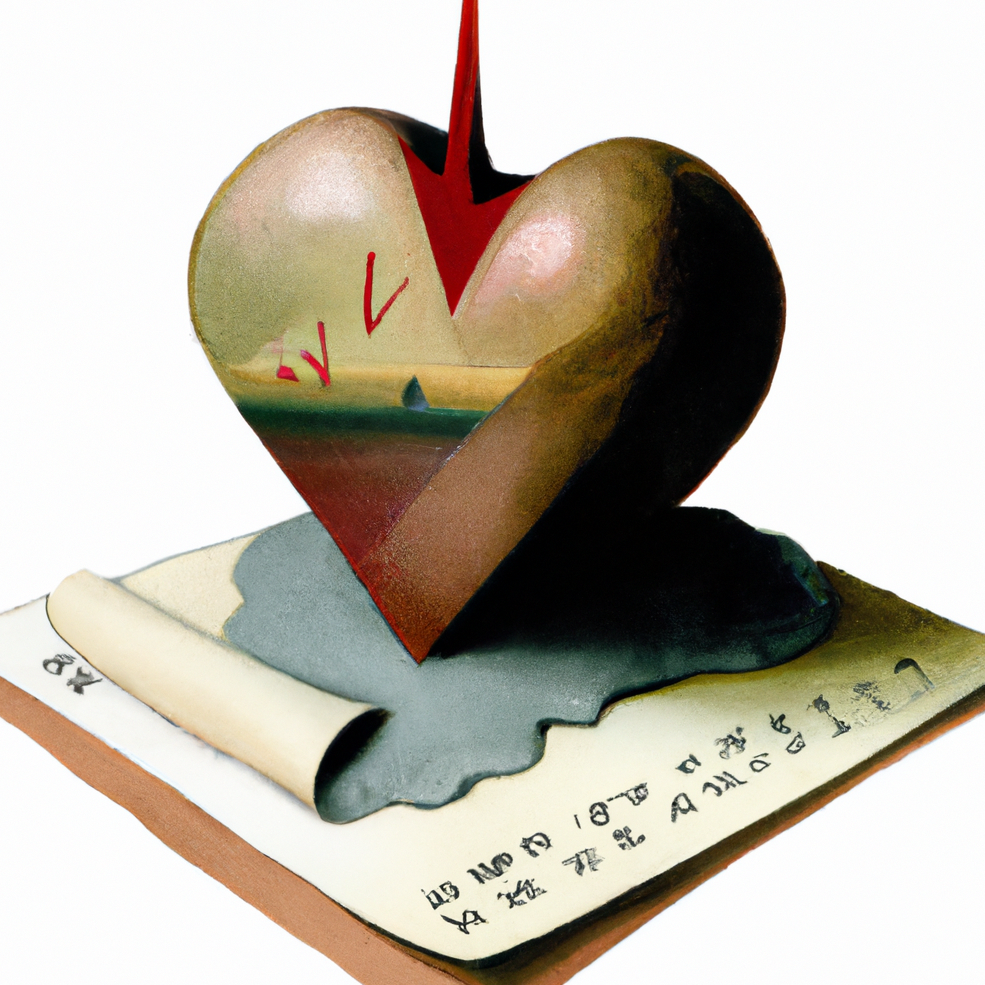

Check out some of our favorite sites

We have learned so much from blogs, bookdowns, and videos openly shared by others. Below, we compiled a list of some of our favorite resources. This list is far from exhaustive; there are too many influential sources to recall and credit as deserved. Nonetheless, we felt it would be helpful to pull together some of those that we routinely find ourselves revisiting and recommending to others.
statistics and more
Andrew Gelman’s blog is perhaps our favorite place to go for musings on all things statistics, especially Bayesian inference, frequentist evaluation, causal inference, multilevel modeling, uncertainty, and reproducibility. We also appreciate the frequent attention paid to philosophy of science issues throughout many posts. Bonus: if you browse long enough, you might even stumble upon an answer to the question that perennially motivates a career crisis for us: The social sciences are useless, so why do we even study them?.
Richard McElreath’s lectures
Solomon Kurz’s bookdowns
Andrew Heiss
Matthew Kay
The 100% CI is a newer favorite. We are especially fond of Julia Rohrer’s (one of the site’s authors) various writing related to causal inference, like these on directed acyclic graphs, collider bias, and what can go wrong with nonrepresentative samples.
Data Colada
Daniel Lakens
Quantitude podcast & blog
Of course, we also love creating data visualizations with ggplot2 in R, so we owe a huge shout out to Hadley Wickham for all his R programming efforts and clear tutorials, which you can learn more about and freely access via his website.
Easy stats…
data science & learning R
Danielle Navarro’s blog is as delightful as it is informative. The blog is a model for reproducible R programming and showcases Danielle’s inspiring art throughout the site (see more of Danielle’s computational art here). The newest version of the blog often focuses on technical posts addressing issues beyond our range of program expertise. However, we love various topical essays from earlier blog renditions, like this one on preregistration, and we strongly recommend Danielle’s Data Science with R course and associated video tutorials for R beginners or those interested in leveling up their R skills.
PsyTeachR
creating a website
If you want to learn to create your own website or blog using R, we recommend checking out Andrew Rapp’s ultimate guide to creating a Quarto blog, Beatriz Mills’ guide to creating a blog with Quarto in 10 steps, Samantha Csik’s tutorial on adding a blog to your existing Quarto website, and Ezekiel Ekunola’s instructions for setting up a personalized domain address for your site.
In addition to R-based visualizations, we relied heavily upon Allison Horst’s website, where she freely shares amazing data science, statistics, and R themed artwork, to help improve our site’s aesthetics. We also had fun generating custom images and art using the artificial intelligence system DALL-E.